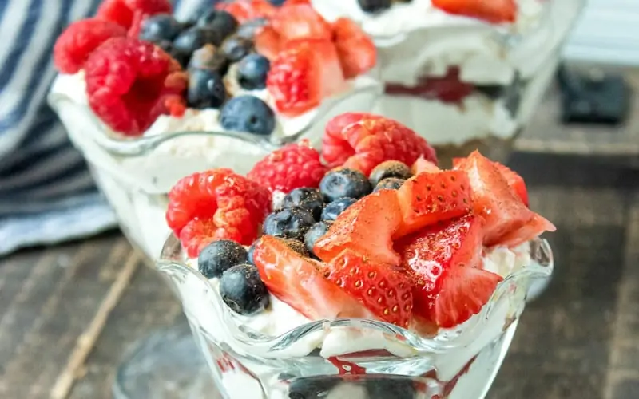

Recipes
Breakfast

Scrambled Vegetable Egg-White
Serves: 2 • Prep time: 10 mins
Ingredients
- 4–6 egg whites
- ¼ cup of diced tomatoes
- A handful of spinach
- ¼ cup of mushrooms
- Salt, pepper, and onion powder (to your liking)
- Optional: Add a bit of Parmesan cheese
Directions
- Spray the pan lightly with oil or cooking spray. (You can also use a nonstick pan.)

Oatmeal
Serves: 1 • Prep time: 5 mins
Ingredients
- ⅓ cup of quick oats
- 1 cup of water (or you may use unsweetened almond milk)
- ½ tsp of cinnamon
- 1 tbsp of ground flaxseed
- 2–3 tbsp of berries (you can use blueberries, strawberries, or both)
Directions
- Bring the liquid (water or almost milk) to a simmer in a pot on medium heat.
Lunch & Dinner

Tuna Salad In A Lettuce Wrap
Serves: 3 • Prep time: 10 mins
Ingredients
- 1 can of tuna (drain all of the water)
- 1 tbsp light mayo (or you may use Greek yogurt)
- Some diced celery
- Salt and pepper
- Lemon juice
- Large lettuce leaves (such as romaine or butter lettuce)
Directions
- Mix the tuna, mayo (or Greek yogurt), diced celery, seasonings, and lemon juice in a bowl till everything is combined.

Vegetable Shrimp Stir-Fry
Serves: 2 • Prep time: 15 mins
Ingredients
- ½ lb of peeled shrimp
- 1 cup of broccoli
- ½ cup of pieces of carrots
- 1 tbsp of low-sodium soy sauce (or coconut aminos if you want)
- Garlic powder
Directions
- Add oil to a pan (or heat the nonstick pan) to medium heat.
Desserts & Snacks

Greek Yogurt Cheesecake
Serves: 2 • Prep time: 15 mins
Ingredients
- ½ cup of plain Greek yogurt
- 1 tbsp of cream cheese softened
- ½ tsp of vanilla extract
- Optional: Berries (strawberries, blueberries, and raspberries)
- Optional: Sweetener to taste
Directions
- Mix Greek yogurt, softened cream cheese, and vanilla extract in a bowl until smooth. (You may add a bit of sweetener for taste.)

Banana Cocoa Ice Cream
Serves: 2 • Prep time: 15 mins
Ingredients
- 1 frozen banana sliced into pieces
- 1 tbsp of unsweetened cocoa
- A splash milk
Directions
- Blend the banana pieces, unsweetened cocoa, and a splash of milk in a blender until creamy.
These recipes are only suggestions. You may freely change and adjust portions and ingredients to fit your personal taste or plans for your health.